Dodecanese, 2026Dodecaneso, 2026Dodécanèse, 2026
- BaseBaseBase
- Kos
- IslandsIlhasÎles
- Kos, Astypalaia, TilosKos, Astypalaia, TilosKos, Astypalée, Tilos
No plotter track this time. The dashed line joins, in order, the places where my phone took photos, so it shows the sequence of the trip rather than the course we sailed.Desta vez não há trajeto do plotter. A linha tracejada liga, em ordem, os lugares onde meu celular tirou fotos, e mostra a sequência da viagem, não o rumo navegado.Pas de trace du traceur cette fois. La ligne pointillée relie, dans l'ordre, les lieux où mon téléphone a pris des photos : elle montre l'enchaînement du voyage, pas la route suivie.
In September 2026 the club sailed in the Dodecanese, the islands along the Turkish coast in the south-east of the Aegean. Our base was Kos, and our route took us west to Astypalaia and back east to Tilos.
Kos to Astypalaia
The crews met in Kos at the start of September. On the 5th we left the busy coast behind and sailed west across open water for the longest leg of the week. Astypalaia is shaped like a butterfly: two wide, hilly halves joined by a strip of land only a few hundred metres across. Our first anchorage was at Maltezana, on that narrow waist, under a sky full of stars.
Em setembro de 2026 o clube velejou no Dodecaneso, as ilhas ao longo da costa turca, no sudeste do Egeu. Nossa base foi Kos, e a rota nos levou para oeste até Astypalaia e de volta para leste até Tilos.
De Kos a Astypalaia
As tripulações se encontraram em Kos no início de setembro. No dia 5 deixamos a costa movimentada para trás e velejamos para oeste em mar aberto, na perna mais longa da semana. Astypalaia tem a forma de uma borboleta: duas metades largas e montanhosas ligadas por uma faixa de terra de poucas centenas de metros. Nossa primeira ancoragem foi em Maltezana, nessa parte estreita, sob um céu cheio de estrelas.
En septembre 2026, le club a navigué dans le Dodécanèse, les îles qui longent la côte turque au sud-est de la mer Égée. Notre base était Kos, et la route nous a menés à l'ouest jusqu'à Astypalée, puis à l'est jusqu'à Tilos.
De Kos à Astypalée
Les équipages se sont retrouvés à Kos début septembre. Le 5, nous avons laissé derrière nous la côte animée et fait route à l'ouest en mer ouverte, pour la plus longue étape de la semaine. Astypalée a la forme d'un papillon : deux grandes moitiés vallonnées reliées par une bande de terre de quelques centaines de mètres. Premier mouillage à Maltezana, sur cet isthme, sous un ciel plein d'étoiles.
The Chora of Astypalaia
On the 7th we went to the Chora. Its white houses climb the hill above the harbour to a Venetian castle at the top, with a row of windmills on the ridge next to it. We walked up through the lanes in the late afternoon, past blue gates and cats on doorsteps, and reached the castle as the sun was setting over the bay.
After dark we came back down to the harbour for dinner by the water, with the Chora lit up above us.
A Chora de Astypalaia
No dia 7 fomos à Chora. As casas brancas sobem o morro acima do porto até um castelo veneziano no topo, com uma fileira de moinhos na crista ao lado. Subimos pelas vielas no fim da tarde, passando por portões azuis e gatos nas soleiras, e chegamos ao castelo quando o sol se punha sobre a baía.
Depois de escurecer descemos ao porto para jantar à beira d'água, com a Chora iluminada acima de nós.
La Chora d'Astypalée
Le 7, nous sommes allés à la Chora. Ses maisons blanches montent sur la colline au-dessus du port jusqu'à un château vénitien au sommet, avec une rangée de moulins sur la crête voisine. Nous sommes montés par les ruelles en fin d'après-midi, devant des portails bleus et des chats sur les seuils, et sommes arrivés au château au coucher du soleil sur la baie.
À la nuit tombée, nous sommes redescendus au port pour dîner au bord de l'eau, la Chora illuminée au-dessus de nous.
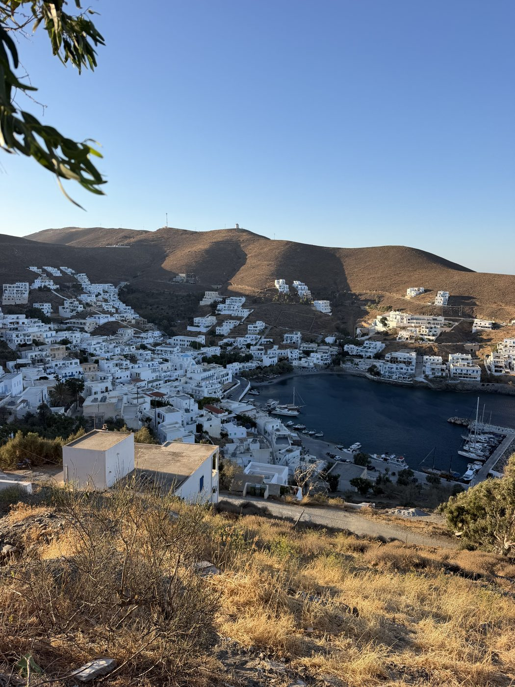
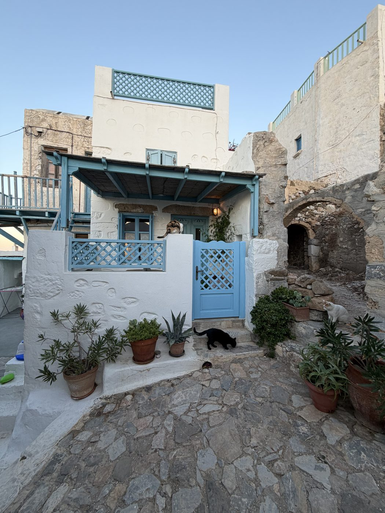
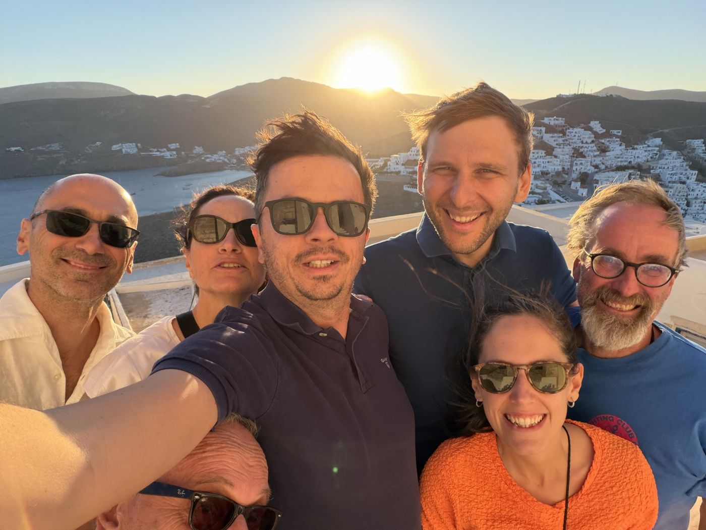
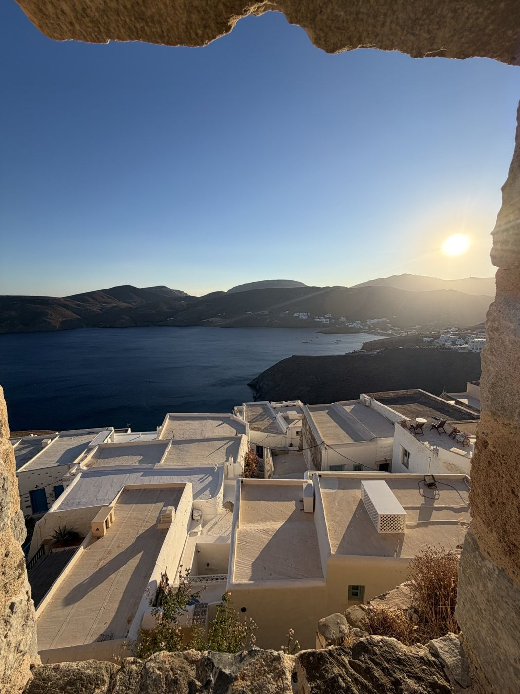
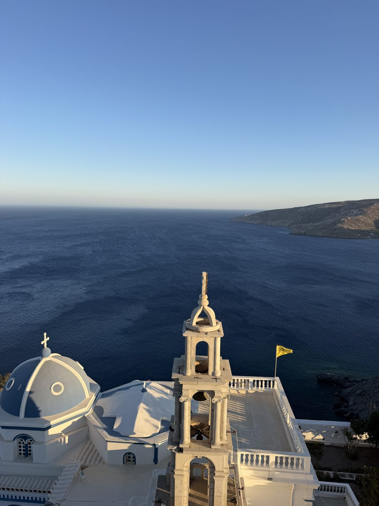
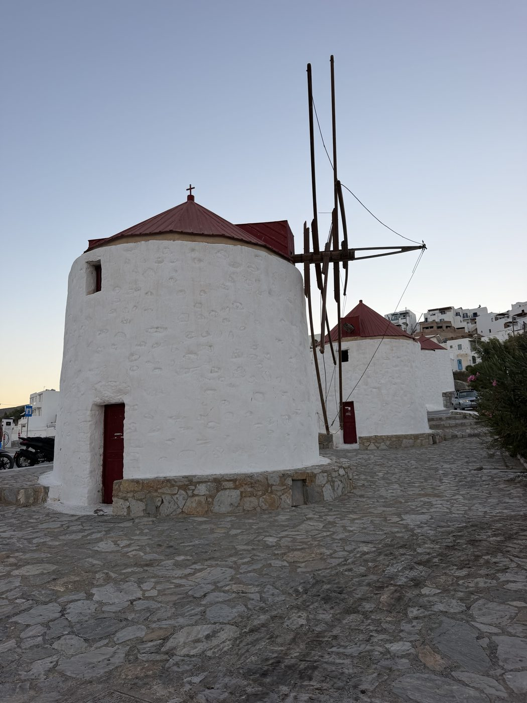
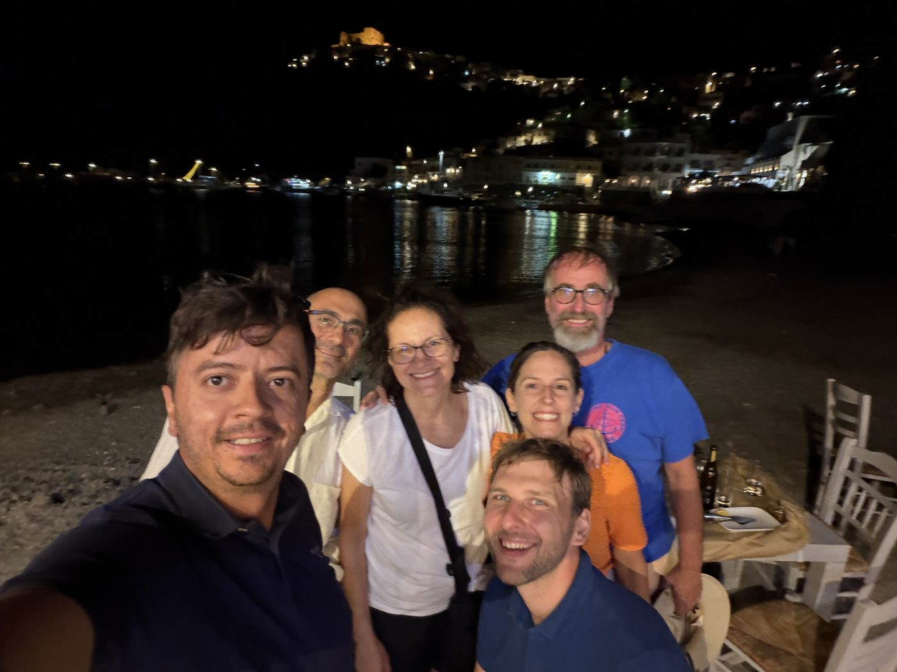
East to Tilos
On the 8th we sailed back east, with the sun setting behind us over the islands we had left, and reached Tilos as night fell. Tilos is one of the quietest islands of the Dodecanese, with few roads and almost no traffic on the water. We anchored for two nights in a bay under red-brown cliffs and spent the 9th swimming and doing very little.
Back to Kos
On the 10th we sailed north towards Kos, with the helm passed round the whole crew so that everyone had a turn, and on the 11th we were back in the marina. That evening we gathered on the stern for a last photo together.
Para leste, até Tilos
No dia 8 velejamos de volta para leste, com o sol se pondo atrás de nós sobre as ilhas que tínhamos deixado, e chegamos a Tilos ao anoitecer. Tilos é uma das ilhas mais tranquilas do Dodecaneso, com poucas estradas e quase nenhum movimento na água. Ancoramos por duas noites numa baía sob falésias marrom-avermelhadas e passamos o dia 9 nadando e fazendo muito pouco.
De volta a Kos
No dia 10 velejamos para o norte, rumo a Kos, passando o leme por toda a tripulação para que todos tivessem a sua vez, e no dia 11 estávamos de volta à marina. À noite nos reunimos na popa para uma última foto juntos.
Vers l'est, jusqu'à Tilos
Le 8, retour vers l'est, le soleil se couchant derrière nous sur les îles que nous venions de quitter, et arrivée à Tilos à la tombée de la nuit. Tilos est l'une des îles les plus paisibles du Dodécanèse, avec peu de routes et presque aucun trafic sur l'eau. Nous avons mouillé deux nuits dans une baie sous des falaises brun-rouge et passé le 9 à nager et à ne pas faire grand-chose.
Retour à Kos
Le 10, cap au nord vers Kos, la barre passant de main en main pour que chacun ait son tour, et le 11 nous étions de retour à la marina. Le soir, nous nous sommes réunis à la poupe pour une dernière photo ensemble.
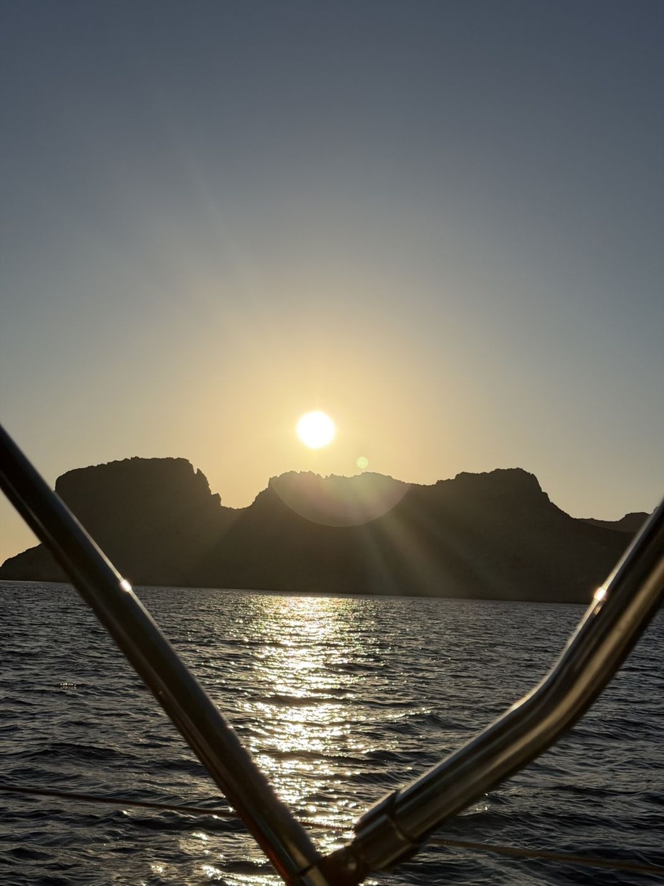
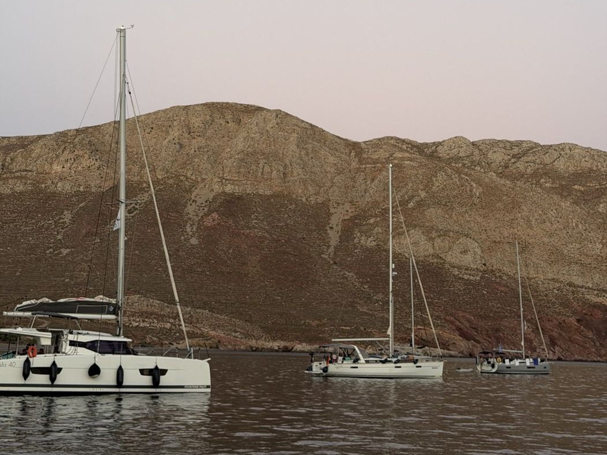
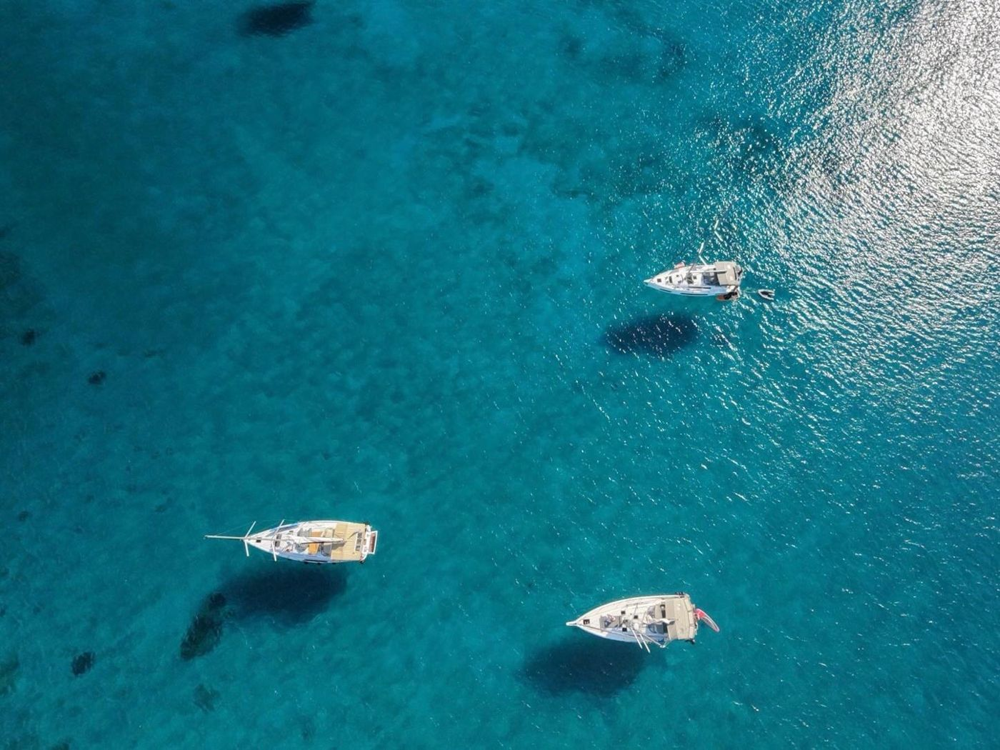
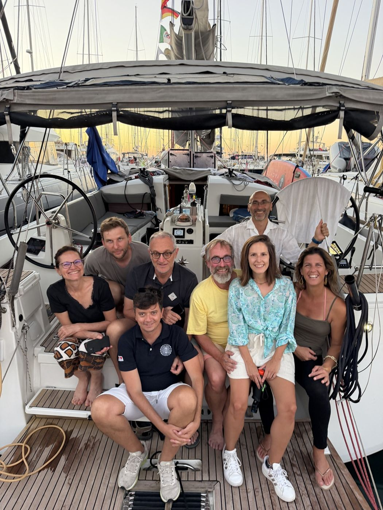